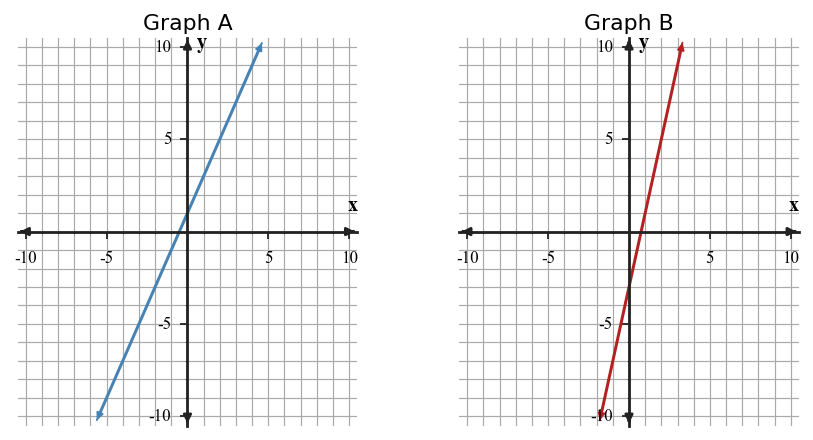

Start with what you can solve independently. Then find different classmates to compare reasoning or help with problems you have not completed. Record your own work and have each partner initial one problem they discussed with you.
A line has slope $5$ and $y$-intercept $-2$. Write the equation.
A context starts at $40$ and decreases by $3$ each step. Identify the slope and initial value.
| Hours | 1 | 3 | 5 | 7 |
|---|---|---|---|---|
| Pay | 18 | 46 | 74 | 102 |
Write an equation for pay in terms of hours. Interpret the starting value in the equation.
A model for a school fundraiser is $M=250+45d$, where $d$ is days. A student predicts \$4,750 after $100$ days. Is the prediction arithmetically correct and contextually reasonable for a short fundraiser? Justify both parts.
Find the input that gives output ${15}$ for the rule $y=x+9$.
State whether $({4},{17})$ fits the rule $y={4}x+1$.
The graph shows a constant rate model for tiles. Use the graph to find the rate of change and starting value.

assessment-grade
A reading plan starts with ${40}$ pages left and decreases by ${4}$ pages per week. Complete a table for weeks ${0}$ through ${6}$ and state the rate of change.
Compare Graph A and Graph B. Which has the greater rate of change? Use steepness and one numerical feature.

Compare two solution methods for deciding when $A(x)={3}x+4$ becomes greater than $B(x)=x+14$: making a table and solving with reasoning from rates. Explain strengths of each method.
Construct a strategy for comparing a graph that passes through $({0},{6})$ and $({4},{18})$ with a table that shows $x$-values ${0}$, ${2}$, ${4}$ and outputs ${10}$, ${16}$, ${22}$. Your strategy must account for starting value, rate of change, and at least one common input.
Create a coordinate graph with constraints: the $y$-intercept must be ${6}$, one point must be $({4},{14})$, and the context must make negative outputs unreasonable. Then explain why your graph satisfies all constraints.

A rule sends $1\to 5$, $2\to 7$, and $3\to 9$. What output goes with input $2$?
In the phrase "temperature depends on time," which quantity is the input?
Complete the input-output table for $g(x)=\sqrt{x+4}$.
| $x$ | -4 | 0 | 5 | 12 |
|---|---|---|---|---|
| $g(x)$ |
Two students classify the table. Student A checks first differences; Student B checks ratios. Use both methods to decide the family and explain which method gives clearer evidence here.
| $x$ | 0 | 1 | 2 | 3 |
|---|---|---|---|---|
| $y$ | 4 | 8 | 16 | 32 |